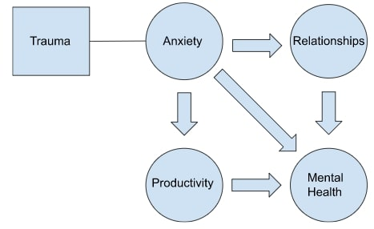

👋 Hello World!
Welcome to the Anxiety Motorized Story box.
This website seeks to bring attention to my project that heavily focuses on, anxiety.
A common day to day struggle that in my opinion, is largely underminded; In work and educational environments.
Well, where does Anxiety stem from?
Often times Anxiety can be traced back to trauma of some sort. This could be a childhood memory that sticks out or a situation that made an individual very paranoid.
regardless of how it developed. I took this mental disorder and used it as the basis for my project, though the idea did not flourish as I wished. The general idea
for the story was a student in class dealing with anxiety; represented as black clouds. Before being praised by their teacher which helps brighten their day.
